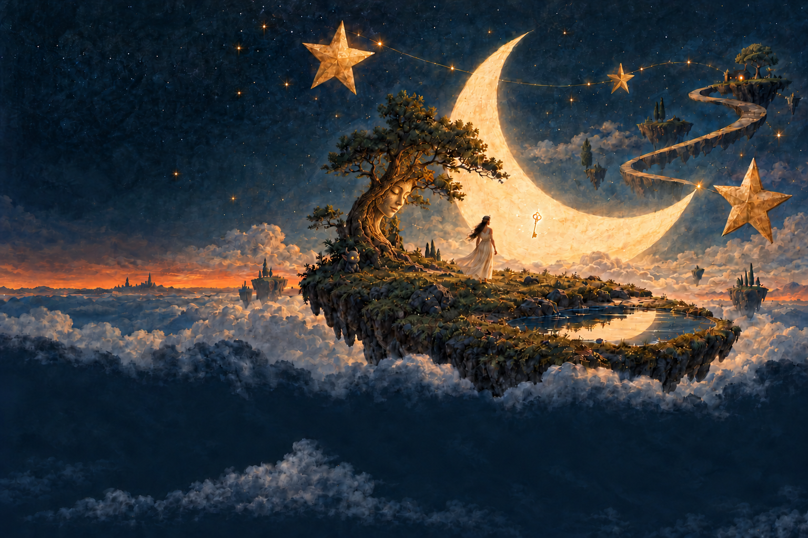

TRACK / 01
第一首，待你选择
在这里写下推荐理由，
或提醒听众留意一个声音。

THE KEEPER OF QUIET SOUNDS
有些声音，连树也记得。
希腊神话中的 Hamadryads 与特定树木共生。这里的树皮面容是受神话启发的原创形象。
树根旁的小恶魔精灵是原创的月尘小灵，短角、尖耳与暖金眼睛为它的林地形态。
读一段树灵的神话 ↗THE KEY TO A SOUND DREAM
她守着月光，也守着那扇尚未开启的门。
她是 Selene，希腊神话中的月之化身。夜色降临时，她驾着月车穿过天空，让月光落向沉睡的大地。
悬在她身旁的钥匙，是这场梦境里的原创意象：它开启通往声音记忆的门。每一首歌，都像一间被月光照亮的房间，等着旅人拾级而入。
钥匙属于本站的故事设定，并非 Selene 在古希腊神话中的传统象征。
读一段 Selene 的神话 ↗01 / ABOUT THE BAND
温柔与噪音，
可以住在同一片星空里。
The Smashing Pumpkins（碎南瓜）是一支来自美国芝加哥的摇滚乐队。他们的音乐里有厚重的吉他，也有轻柔、梦幻的片刻。
这是音乐虫子的私人入门指南。这里会慢慢放入我选的歌曲、想推荐的专辑，以及某一次被声音打动的瞬间。
前往乐队官网02 / SELECTED TRACKS
三首歌，三个入口。
具体选曲，等音乐虫子亲自放进来。
TRACK / 01
在这里写下推荐理由，
或提醒听众留意一个声音。
TRACK / 02
可以是熟悉的旋律，
也可以是意想不到的另一面。
TRACK / 03
留一个位置，
给那首让你想继续听下去的歌。
03 / FURTHER LISTENING
喜欢一首歌以后，
也许值得走进一整张专辑。
THE NEXT CHAPTER
待音乐虫子选择。这里将放入专辑封面、推荐理由和收听入口。
待补充ANOTHER SIDE
保留给第二张专辑，继续探索这支乐队的不同侧面。
待补充04 / A MOMENT TO KEEP
有些歌，是因为某一刻
才留下来的。
这段笔记，留给音乐虫子来写。
可以记下一个突然响起的吉他、一段人声，或者当时的生活片段。无需完整乐评，写下那个值得回来的瞬间就好。